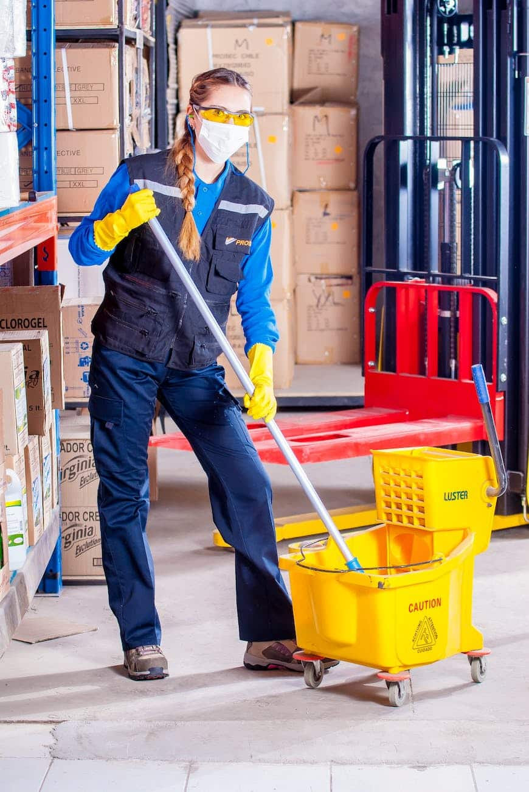

نظافة المصنع مش رفاهية، دي أساس استمرارية الإنتاج
في عالم الصناعة، النظافة مش مجرد شكل جمالي. الأرضيات الملوثة بالزيوت ممكن تسبب حوادث، والأتربة المتراكمة على الماكينات ممكن تقلل من كفاءتها وتسبب أعطال مفاجئة. دوور كلين بتقدملك حلول نظافة صناعية متخصصة بتضمنلك بيئة عمل آمنة، وماكينات شغالة بأعلى كفاءة، وقدرة على اجتياز أي تفتيش جودة أو سلامة وصحة مهنية.
خدماتنا في تنظيف المصانع بتشمل:
- تنظيف خطوط الإنتاج والماكينات وإزالة الشحوم والزيوت
- تنظيف وجلي الأرضيات الصناعية (خرسانة، إيبوكسي)
- تنظيف الهياكل المعدنية والأسقف وإزالة خيوط العناكب والغبار الصناعي
- تنظيف المخازن والمستودعات وترتيبها
- تنظيف وتطهير غرف تغيير الملابس ودورات المياه
- تنظيف أنظمة التهوية والمراوح الصناعية (من الخارج)
- تجميع وتصنيف المخلفات الصناعية للتخلص الآمن منها
ليه دوور كلين هي اختيارك الأفضل لنظافة مصنعك؟
- فريق متخصص مدرب على معايير السلامة داخل المصانع (OSHA)
- معدات ومنظفات صناعية قوية وآمنة على الماكينات الحساسة
- جداول عمل مرنة (بعد ساعات العمل، في الإجازات) لضمان عدم توقف الإنتاج
- خبرة في التعامل مع مختلف أنواع المصانع (غذائية، كيماوية، نسيج، وغيرها)
- عقود دورية (شهرية، ربع سنوية) تضمن نظافة مستمرة لمصنعك